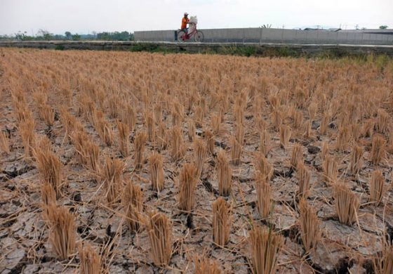
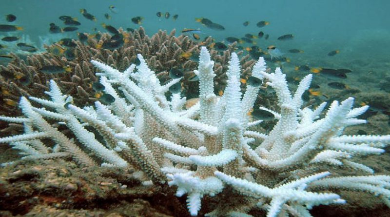
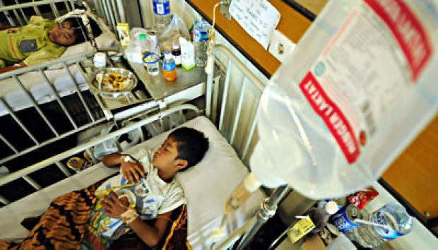

c. Pengaruh Terhadap Pertanian dan Perkebunan
Pertanian dan perkebunan merupakan sumber pangan bagi manusia. Ketika pemanasan global terjadi, sektor pertanian dan perkebunan juga akan terkena dampaknya, diantaranya :
- Kekeringan yang melanda wilayah pertanian akan menyebabkan kegagalan panen karena tanaman menjadi rusak
- Banjir di wilayah pertanian juga akan merendam tanaman pertanian yang mengakibatkan gagal panen
- Akibatnya, wilayah yang rawan bencana banjir dan kekeringan berpotensi kekurangan pangan
- Tanaman pangan dan hutan rawan mengalami serangan hama dan penyakit yang populasinya meningkat akibat perubahan iklim
d. Pengaruh Terhadap Hewan dan Tumbuhan
Pemanasan global tak hanya berdampak pada manusia, tetapi juga pada hewan dan tumbuhan. Terlebih, hewan dan tumbuhan sulit menghindari efek pemanasan global. Akibatnya, populasi mereka terancam punah. Kepunahan ini dipicu oleh beberapa faktor seperti kekurangan sumber makanan, habitat yang rusak, dan perkembangbiakkan yang terganggu. Kepunahan spesies organisme tertentu secara tidak langsung juga akan mengganggu kehidupan organisme lain yang bergantung dengannya. Gejala-gejala kepunahan yang dapat diamati saat ini, diantaranya,
- Berkurangnya populasi penguin di daerah Antartika sekitar 30% dalam 25 tahun terakhir disebabkan kehilangan habitatnya.
- Beruang kutub mengalami penurunan populasi dikarenakan es yang mencair membuat mereka kehilangan habitatnya serta menyulitkan mereka untuk mencari makanan.
- Banyaknya karbon dioksida yang terlarut membuat suhu air laut naik.
sehingga menyebabkan keasaman laut meningkat. Kondisi tersebut membuat koral/karang melepaskan ion karbonat atau ganggang penyusun koral sehingga koral-koral kehilangan warna dan akhirnya mati. Padahal ada banyak spesies yang hidupnya bergantung pada terumbu karang. Apabila ekosistem koral terganggu, maka spesies organisme laut lain yang bergantung juga ikut terganggu.
- Gelombang pasang dan banjir yang sering terjadi menyebabkan luas hutan mangrove berkurang. Padahal, hutan mangrove mempunyai peranan penting bagi kehidupan pesisir pantai, termasuk menjaga ketersediaan air bersih.
e. Pengaruh Terhadap Kesehatan
Pemanasan global menyebabkan perubahan iklim. Iklim yang berubah juga berpengaruh terhadap kesehatan manusia, diantaranya :
- Meluasnya penyebaran penyakit. Contohnya penyakit malaria dan demam berdarah, penyakit tersebut merupakan penyakit yang sering dijumpai di daerah tropis, namun telah menjalar ke daerah subtropis karena suhu udara di daerah subtropis yang menghangat menyebabkan organisme patogen juga dapat berkembang biak di daerah subtropis tersebut.
- Meningkatnya kasus kematian akibat penyakit yang dipicu oleh cuaca panas, misalnya stres, stroke, dehidrasi, jantung, dan ginjal.
- Meningkatnya kasus alergi dan penyakit pernapasan karena udara yang lebih hangat memperbanyak polutan seperti spora jamur dan serbuk sari tumbuhan.
- Meningkatnya penyakit infeksi, yang semula menginfeksi hewan, kemudian dapat menginfeksi manusia, misalnya flu burung dan flu babi.
Pemanasan global menjadi masalah yang dampaknya sangat mempengaruhi kelangsungan kehidupan di bumi, mulai dari lingkungan, pertanian, sumber daya air, kawasan pesisir, dampak terhadap kelestarian hewan dan tumbuhan, masalah kesehatan dan masih banyak lagi. Jika tidak ditangani, bukan tidak mungkin kehidupan di bumi akan musnah.
Kuis
Jawablah pertanyaan berikut berdasarkan apa yang telah kamu pelajari!
Salah!
Benar!
Salah!
Benar!

Sumber: jawapos.com
Gambar 16.Tanaman padi mati akibat kekeringan

Sumber: pgsp.big.go.id
Gambar 17. Pemutihan terumbu karang akibat air laut menjadi asam

Sumber: nasional.tempo.co
Gambar 18. Pemanasan global meningkatkan penyebaran penyakit DBD